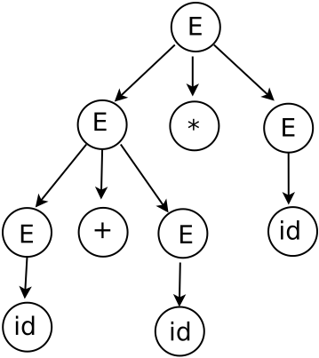
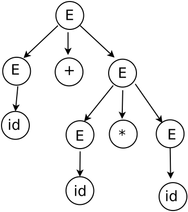

Gramáticas
La forma general de la gramática libre de contexto. El maestro Chomsky clasifica a las gramáticas por la forma de la producción. Por lo que la forma de la gramática libre de contexto es la siguiente:
A → α
donde A ∈ N y α ∈ V ∗ .
Ejemplo de gramática libre de contexto:
La gramática formal:
G1 = ({S}, {a, b}, P1 , S)
Donde:
N = {S}
T = {a, b}
El símbolo inicial es S
P1 = {S → aSa, S → bSb, S → ε}
Engineering a compiler, Keith D. Cooper and Linda Torczon, Pág. 1-3
Derivaciones
Para hacer las derivaciones se utilizan las definiciones de forma sentencial y desde luego la definición de derivación.
Definición de forma sentencial. La forma sentencial es una cadena de sı́mbolos que ocurre como un paso en una derivación válida.
Definición de derivación. Derivación es una secuencia de reescribir los pasos que comienzan con el sı́mbolo inicial de la gramática y que finaliza con la sentencia en el lenguaje
Tipos de derivaciones. Existen dos formas de derivar las cadenas de caracteres, la derivación por la derecha y la derivación por la izquierda.
Ejemplo de derivaciones. Derivar por la izquierda la siguiente cadena de la gramática:
G2 = (N2 , T2 , P2 , S2 )
Donde:
N2 = {E}
T2 = {+, *, id}
El símbolo inicial es E
P2 = {E → E + E, E → E * E, E → (E), E → id}
Engineering a compiler, Keith D. Cooper and Linda Torczon, Pág. 3
Derivación por la izquierda:
E ⇒ E * E ⇒ E + E * E ⇒ id + E * E ⇒ id + id * E ⇒ id + id * id
El árbol sintáctico es el siguiente:

Introduction to Compiler Design, Torben AEgidius Mogensen, Pág. 97
Gramáticas libres de contexto.
Ambiguedad
Definición de ambiguo del diccionario de la real academia española 1. adj. Dicho especialmente del lenguaje: Que puede entenderse de varios modos o admitir distintas interpretaciones y dar, por consiguiente, motivo a dudas, incertidumbre o confusión. 2. adj. Dicho de una persona: Que, con sus palabras o comportamiento, vela o no define claramente sus actitudes u opiniones. 3. adj. Incierto, dudoso.
Definición de gramática ambigua. Si aplicando las producciones de una gramática se obtienen para una cadena por derivación dos árboles sintácticos diferentes.
E ⇒ E + E ⇒ id + E ⇒ id + E * E ⇒ id + id * E ⇒ id + id * id
El árbol sintáctico es el siguiente:
